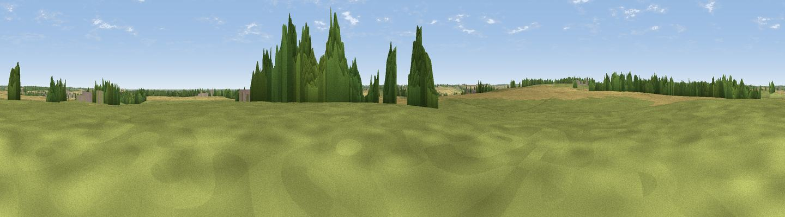

Viewpoint near Ryhall
#39507 in England · top 64% of its area beats it · near RyhallWhere it is
The exact computed spot (TF 02446 11820). Click the marker for map links.
The view, rendered

A 360° render of this exact spot computed from the terrain model, tree cover and land cover — summer colours, afternoon light, calibrated against photographs of famous viewpoints. Real trees, hedges and buildings will differ in detail.
The panorama
Grey silhouette: terrain skyline in each direction (720 bearings, Earth curvature and refraction included). Dashed green: skyline with trees (+15 m) and buildings (+8 m) as obstacles. Blue strip: how far the ground is visible on each bearing.
Where the view opens
Wedge length = distance to the farthest visible ground on that bearing (vegetation-aware). Rings at 10, 25 and 50 km.
What fills the view
53% cropland · 38% grassland · 7% woodland · 2% built-up
Angular shares of the visible panorama (visual magnitude), not map area. Landscape diversity 0.42 (0–1 Shannon).
Key numbers
More beautiful places nearby
The staircase of upgrades: each row has a higher view potential than everything closer. Driving times are estimates from straight-line distance, calibrated against real road routing — check an actual route before setting out.
| Place | Direction | Drive | Score |
|---|---|---|---|
| Viewpoint near Little Casterton | W · 2 km | ~4 min | 36.0 |
| Viewpoint near Toft | NE · 8 km | ~16 min | 49.0 |
| Viewpoint near Pickwell | W · 25 km | ~41 min | 57.3 |
| Viewpoint near Burrough on the Hill | W · 26 km | ~42 min | 63.4 |
| Viewpoint near Burrough on the Hill | W · 26 km | ~42 min | 66.0 |
| Viewpoint near Belvoir | NW · 30 km | ~47 min | 68.9 |
| Viewpoint near Belvoir | NW · 30 km | ~47 min | 70.8 |
| Broombriggs Hill | W · 51 km | ~72 min | 74.4 |
52.69438, -0.48559 · source: osm peak · position refined by local search. Computed location — check access rights before visiting.